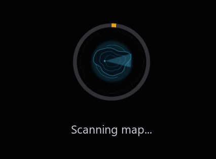
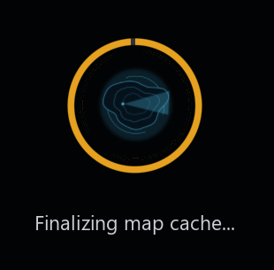
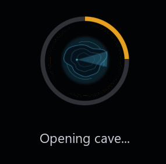

STATION 00 — ENTRY
See the whole cave
before you swim it.
CaveViewer is a free 3D viewer built for cave divers and survey teams, made to open photogrammetry scans too large for anything else — from a few hundred megabytes up past 150GB — and fly through them smoothly on Windows, macOS, or Linux.
Inside an actual cave scan, fully textured — minimap bottom-left, brightness / global light / distance / mesh / texture / shade / open / help / color controls bottom-right.
Station 01
The Tool
Built for scans too big to open anywhere else
A multi-gigabyte cave scan will choke most viewers. CaveViewer splits the model into a 3D grid of spatial chunks and only keeps the chunks near your current position loaded — so frame rate stays smooth no matter how large the full system is.
Navigation
Fly through it like you're really there
Free-fly camera — WASD to move and strafe, E/Q for up and down, hold left-click and move the mouse to look around, Z/X for a barrel roll, and Shift for a speed boost. Camera bookmarks (save a view with Ctrl+1–9, jump back with 1–9, clear one with Del+1–9) let you return to a spot instantly.
Lighting
Headlamp, plus an ambient fill when you need it
Adjustable headlamp brightness for the cone in front of you, and a separate global ambient light to wash out shadows across the whole cave when you want to see everything at once.
Orientation
A minimap that knows where the passage actually is
Click anywhere on the minimap to jump there instantly — it lands you inside the actual passage near your current depth, not floating in empty rock. A Reset View button squares your camera back to level without moving you.
Inspection
Mesh, texture, or flat-faceted shading
Toggle wireframe to inspect scan density and quality, toggle photo texture on or off, and switch between smooth and flat-faceted shading to see the raw triangulation of the scan.
Multiple maps
Switch caves without closing the program
Open a different map mid-session with one click. First-time imports show real progress in-window; maps you've opened before load instantly from a local cache.
Always current
Download updates from the launch screen
Start the download, keep using your maps, and return to the launch screen whenever convenient. CaveViewer verifies the package and reveals it for manual installation, but never runs or installs it for you.
Any machine
Windows, macOS, and Linux, the same way
Download the build for your system and run it — no Python install, no terminal commands, no dependencies to track down. The controls and features are identical everywhere.
No size limit
Built for scans way past what fits in memory
Very large exports are read in a single streaming pass and written straight to disk in spatial pieces, so opening a scan never requires loading the whole thing into RAM at once — even when the file is far bigger than your computer's memory. The first time a map opens, this one-time import shows its progress on screen:




Tuning
Advanced settings for underpowered laptops and huge caves
An optional settings panel lets you cap how much RAM and GPU memory CaveViewer is allowed to use, how many background threads help load and import chunks, and how big those chunks are — useful if you're running on a laptop, or importing a scan on the larger end. Full breakdown below.
Customization
Set the void to whatever color helps you see
The empty space beyond the scan doesn't have to be black — drag the R, G, and B sliders in the Color panel to pick a background that makes wireframe or thin passages easier to read against.
Station 02
Compatibility
Bring your own scan
CaveViewer reads the formats survey and photogrammetry software actually export. Drop in a folder, and it figures out the rest.
Station 03
On Screen
Everything you need is one column, one corner
Every adjustable control — headlamp brightness, global light, render distance, mesh and texture toggles, the background color picker, switching maps — lives in a single column anchored to the bottom-right corner, and applies live while you're still flying.
The whole column, live — Mesh, Texture, and the Shade toggle for switching between smooth and flat-faceted surfaces.
This full reference appears automatically while a map loads, and anytime after via the HELP button — including camera bookmark slots (save with Ctrl+1–9, recall with 1–9, clear with Del+1–9).
Station 04
Getting In
Install
Grab the build for your system — no Python install, no terminal commands to memorize, no dependencies to hunt down.
-
Download the build for your platform
From the Releases page, grab the
.dmgfor macOS, the.zipfor Windows, or the Linux x86_64.AppImage. -
Install it
macOS: open the DMG and drag CaveViewer into Applications. The first time it opens, go to Settings → Privacy & Security and allow it to run.
Windows: extract the zip, open thesetupfolder, and double-clickLaunch_Setup.bat. Click Install and let it check for Python, install the Visual C++ runtime and required libraries, open a firewall rule so update checks can reach GitHub, and create a Desktop shortcut.
Linux: runchmod +x CaveViewer-*.AppImage, then launch it directly — no system install needed.Ready to install
Installing, live log
Ready to launch
On your desktop
-
Launch CaveViewer
You'll land on the splash screen with a Select Map button — or click Download Sample Maps if you don't have a scan of your own yet and want to try it out first.
-
Point it at your map
Select the folder containing your
.obj+.mtlor.glbfile. First time opening a new map, it imports and caches it once — every open after that is instant.
What you see on launch — click Select Map and pick your map folder, or try a sample map instead.
First time opening a new map only — every open after this is instant.
No scan of your own yet? Download a real cave system from the Sample Maps dialog and open it the same way.
Station 05
Tuning
Advanced Settings, explained
Most people never need to open this. It's here for large maps on constrained hardware, or for squeezing more performance out of a strong one. Streaming Performance applies live to your current session — Map Parsing only affects a map the next time it's imported or re-imported.
Streaming Performance
Applies immediately, every launch
Higher lets more chunks stay resident at once, at the cost of leaving less RAM for everything else running.
Higher keeps more geometry loaded on the GPU — push it too high on a weaker card and you risk stutter instead of smoothness.
Only needed if auto-detection gets your GPU's memory size wrong — set it manually to correct that.
More threads load chunks faster in the background, but compete with the render thread for CPU time.
Reserves cores for the rest of your system instead of handing everything to streaming — raise it on a machine you're also using for other things.
A higher cap brings new chunks on screen faster when flying fast, at the cost of occasional frame-time spikes.
A larger budget uploads more per frame before yielding — smoother streaming, but a slightly heavier hit each frame it happens.
Map Parsing
Only affects the next import / re-import
Smaller chunks give finer streaming control in tight, twisty passages; larger chunks mean fewer draw calls in big open rooms.
A small yield during scanning keeps the machine responsive on slower disks, at the cost of a slightly longer import.
More threads speed up the one-time cache build, competing with whatever else is running on your machine while it works.
Reserves cores during import so the rest of your system doesn't grind to a halt while a huge map is being chunked.
Opened from the splash screen's Advanced Settings link. On Linux, saved under ~/.config/caveviewer/; on macOS and Windows, saved under ~/.caveviewer/.
Station 06
Field Notes
The dives behind the data
The scans CaveViewer opens come from real mapping expeditions. Here's footage from two of the systems the tool has been tested and used on.
 Watch on YouTube
Watch on YouTube
Wes Skiles Peacock Springs State Park — 3D Mapping Initiative
Peacock Springs, near Live Oak, Florida, is one of the longest underwater cave systems in the continental U.S. — nearly 33,000 feet of surveyed passage across two major springs and six sinkholes. This covers the effort to map it in 3D.
 Watch on YouTube
Watch on YouTube
Devil's Eye — Mapping Update, February 2026
Devil's Eye is one of the entrances into the Ginnie Springs cave system in High Springs, Florida, and one of the most-dived training cave systems in the world. This is a progress update from the ongoing effort to map it.
Station 07
Surface
Built by people who use it
CaveViewer started as a way to actually look at the survey data from real dives, not just collect it.